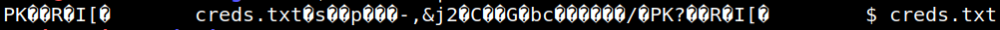
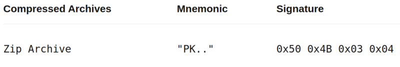

3.2 Pipe a base64 file
Pipe “cat” eon to base64 to know what is inside.
1. Run on your Kali Machine.
$cat eon | base64 -d
Output:

You can see that starts with “PK” and there's a file callded “creds.txt”.
From https://www.netspi.com/blog/technical/web-application-penetration-testing/magic-bytes-identifying-common-file-formats-at-a-glance/

So it's a zip file,
2. Redirect the output of “cat eon | base64 -d" to “eon.zip”. This way you'll create a zip file.
$cat eon | base64 -d > eon.zip